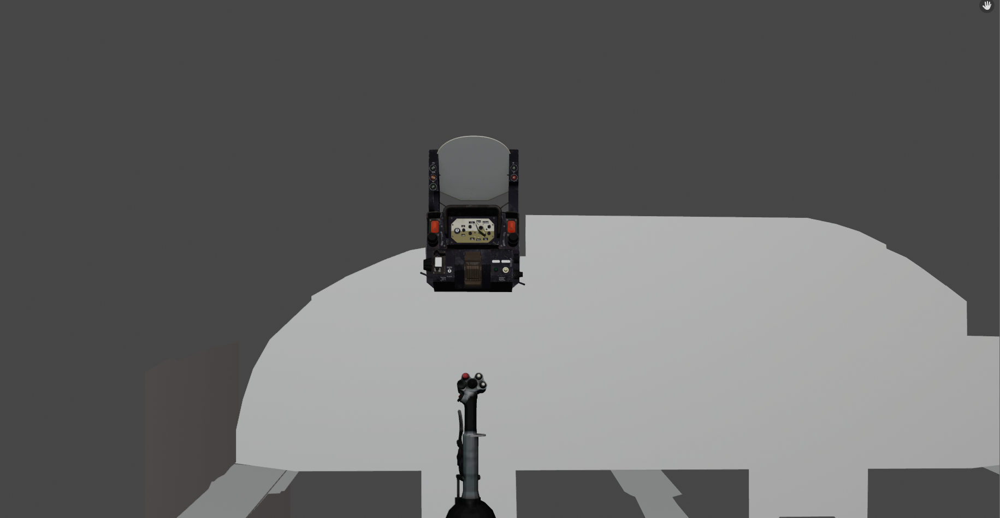
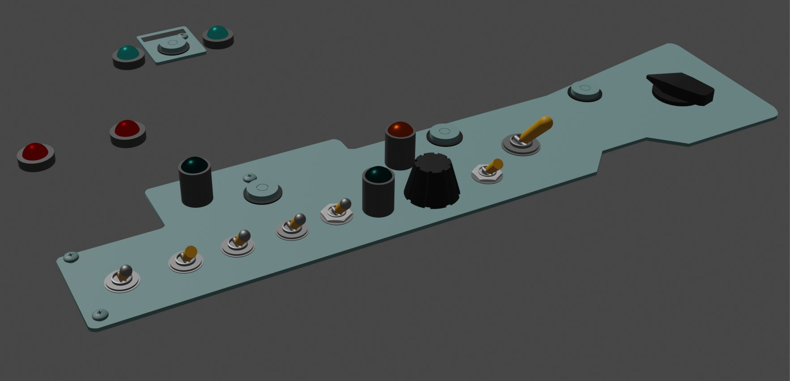
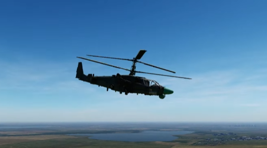

Власенко Володимир. Вирішив зробити сайт самостійно. Нехай це буде невеличка стаття про Су-24М та те, як я займаюсь розробкою модифікації на цей чудовий літак для авіасимулятора DCS World, продовженням серії Lock On.
Свій шлях в створенні цього літака я почав в грудні 2022 року, тоді і почав повною мірою вивчати Blender, дивлячись на це, будучи більш-меньш професійним, якщо можна так виразитись, моделістом та модоробом, виходило в мене не дуже, проте на той момент мені це здавалось дуже крутим. Перша моя модель, ІЛС взагалі був від МіГ-23

До прикладу фаску(згладження кутів робив руками, а не за допомогою блендеру. Доречі на новий рік 2022-2023 проходив Халф Лайф 2, не міг цього не згадати) Улюблений момент в Епізоді 2, там де потрібно в печерах лазити.

Повернусь до теми, дійшов я до цього результату

на той момент це також було дуже круто для мене, але була одна невеличка проблема, я взагалі не розумів як експортувати модель в DCS.
Намагався звісно через Блендер, проте не виконував потрібних дій, а думав що через Блендер цього зробити не можна,
Саме тому завантажив 3DsMax, в якому все ж таки розібрався і в подальшому це допомогло мені і в блендері, а через місяць 3DsMax попросив ввести ключ активації, оскільки не був активований. З цього моменту настала невеличка пауза, до того моменту, поки я не вирішив завантажити приклад моделі для DCS, який звісно запрацював, після цього зробив просту модель Ка-52, у якої гвинти крутились в одну сторону і до того ж дуже сильно тряслись, взяту з Roblox, яка в свою чергу була "Ріппена" з WarThunder.
Цей мод навіть став трохи популярним серед невеликого кола. Потім зробив для себе невеличке відкриття і зміг зробити таку кабіну, з моделлю кабіни з зовнішньої моделі Су-24 в DCS

після цього намагався щось робити по Су-24, проте знань все-таки не вистачало. З цього моменту настала велика пауза з кінця зими до початку осіні, почав я з Су-17, який був отриманий тим же методом, що і Ка-52, проте закинув і почав робити МіГ-23 вже напряму "Ріппений" з тундри, перед тем я ще намагався зробити МіГ-27К, але був ряд проблем, тому закинув майже відразу. Почав з кокпіту, оскільки в DCS була зовнішня модель ще з LockOn, проте робив не правильно, тому прилади показують не вірну інформацію, а якщо перероблювати, то з нуля

також перед МіГом та Су-17 я намагався зробити кокпіт Ка-52, але відсутність знань не давала це адекватно зробити.
Через місяць я вирішив зробити Мі-17, лише потім дізнався більше про Мі-17, Мі-17 це експортний варіант Мі-8МТ, тобто Мі-17В5, які доречі нам передали є Мі-8МТВ5. Цікавий мені та кругу людей він був тим, що має носову частину.
.png)
Під час 5 дневної розробки, думаю впорався і за 2-3, якщо б не розсіював увагу так сильно, виникла проблема, а виникала вона з-за того, що я не поставив фігурки лапки в коді. Проте все запрацювало і моїм, хоча і простим модом почали цікавитись люди, після чого на своєму сервері я почав збирати комьюніті, після цього особливо нічим в цій сфері не займався і ближче до грудня повернувся до розробки, також робив Ка-52, з яким все виходило гарно, проте я його знову закинув, зробив Су-27УБ, оскільки мої товариши купили модель, вийшло зробити лише на початку січня, також в 25-28 числах грудня нарешті зробив оновлення для Мі-17, де змоделив нову панель та додав можливість змінювати колір носу.
Ще пригадую що в другій половині листопада зробив мод на іграбельний ЗРК "Бук", як початок для іграбельного С-300, який я так і не домоделив, а ось Бук був в грі, так підходив по всім анімаціями, а саме їх аргументами, або ж просто кодом анімації. В січні, а саме зараз я робив Мі-2 з текстурами Мі-8, проте не сподобався і закинув, хотів також кокпіт робити, але часу не вистачає ще на Мі-2, не в цей раз. Після нещодавно моменту я знову повернувся до Су-24М, чим зараз повною мірою і займаюсь, знання є, сили також, програми теж.
Обіцяв поговорити про системи Су-24М, також скажу що працюю і над "Флайт моделью" яка можна сказати повноцінна програма на С++, декілька тисяч строк коду, ясне діло з нуля не буду писати, взяв за основу дуже гарний код, який здебільшого сумісний з новими версіями сіму, але і ті проблеми не тяжко фікшуться. З цікавинок Су-24М має режим польоту з огібанням рельєфу, який називається "Карпати", за свій перший політ в Карпатах, в цьому режимі командир слідує за кружком на ІЛС(Індикатор на лобовому склі). Також Су-24М має наземний радар, який в подальшому я також хотів би реалізувати. За системи багато не написав, не вистачає часу з іншим ДЗ, тому пробачайте :)